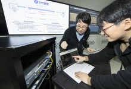
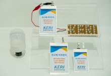

헤드라인 뉴스
이해진 네이버 창업주 지난해 연봉 19.4억원…최수연 대표는 13.5억원
네이버에서 가장 많은 보수를 받은 사람은 창업자인 이해진 글로벌투자책임자(GIO)다. 그는 회사에서 총 19억3600만원의 보수를 받았다. 최수연 네이버 대표이사 사장은 지난해 보수로 13억4900만원을 받았 조선비즈
파이낸셜뉴스
헤드라인 뉴스
번호이동지원금 고작 13만원? 용산, 통신3사에 "책임" 강조
이동통신 3사가 번호이동 전환지원금을 최대 13만원까지 풀기로 한 것에 대해 18일 대통령실이 나서 추가로 더 풀 것을 촉구했다. 새로 개정된 시행령 규정에 따라 번호이동 지원금이 최대 50만원까지 가능해졌지만, 이 파이낸셜뉴스
파이낸셜뉴스
국산 콘솔 명작 `P의 거짓`, 글로벌서 700만이 즐긴다
지난 2월말 플랫폼 집계 결과...지역별 이용자는 북미·유럽·아시아 순 네오위즈 'P의 거짓'이 출시 5개월 만에 글로벌 누적 이용자 700만명을 달성했다. 지난 2월 말 PC 플랫폼 스팀(Steam), 플레이스테이
디지털타임스

KT, 신한은행에 하이브리드형 양자 보안망 구축
KT는 신한은행과 함께 하이브리드형 양자 보안망을 신한은행 내부에 임시로 구축하고 성능을 검증했다고 19일 밝혔다. 이 통신망은 서울 중구 신한은행 본점과 강남 별관을 연결한다. KT 하이브리드형 양자 보안망은 양자
지디넷코리아

폭발·화재 위험 없는 `전고체 전지`, 공정 줄이고 품질은 높였다
전기연, 습식합성 공정 개발..황화리튬 입자 제어 이온전도도 2배 높여..전고체전지 상용화 한 발짝 폭발과 화재 위험이 없는 전고체 전지 상용화에 한 걸음 다가설 수 있는 새로운 공정기술이 나왔다. 제조 공정을 대폭
디지털타임스